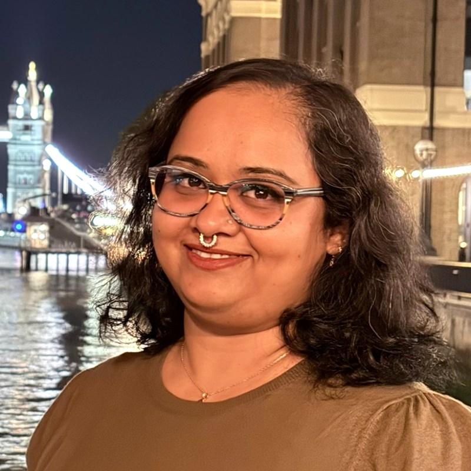

Human–Computer Interaction
Designing, testing and evaluating interactive systems so that people can actually use them.

Research Technical Fellow · CRC 1342 Global Dynamics of Social Policy
SOCIUM · University of Bremen, Germany
I am a Research Technical Fellow in the Collaborative Research Centre 1342 Global Dynamics of Social Policy at the University of Bremen, based at SOCIUM – Research Center on Inequality and Social Policy. In the CRC's infrastructure project INF, I work on the Welfare State Information System (WeSIS), covering its user experience, research software and research data management. Since August 2022 I have been building WeSIS as a full-stack developer with Ruby on Rails and PostgreSQL.
My background is in computer science and media informatics. I studied Computer Science and Engineering at Shahjalal University of Science and Technology in Bangladesh and Digital Media (M.Sc., Media Informatics) at the University of Bremen. For more than four years I worked in the Gaming Lab at BIBA, designing, testing and writing about serious games. Before that I worked in industry as a software quality assurance engineer, implementation engineer and web developer.
Designing, testing and evaluating interactive systems so that people can actually use them.
Games for learning and reflection, from gamified learning paths to games on European identity.
The socio-cultural impact of digital and social media, including risky behaviour such as selfie-related deaths and injuries, studied through news data and user surveys.
INF runs the Global Welfare State Information System (WeSIS), a public platform for data on social policy worldwide, together with eScience services and research data management for the CRC Global Dynamics of Social Policy. I joined INF in August 2022, at the start of the CRC’s second funding phase.
Bengali (native) · English (C1) · German (currently taking a C1.1 course) · Korean (A1)
tany@uni-bremen.de
Phone: +49 421 218-58600
University of Bremen
CRC 1342: Global Dynamics of Social Policy
Unicom Building, Room 7.1040
Mary-Somerville-Str. 7
28359 Bremen, Germany
Office hours by appointment.